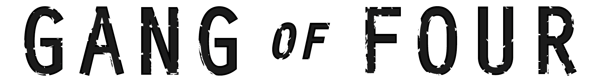

JavaScript 设计模式【一】
By XueQian
2016/01/26
模式?
---
最早诞生于建筑学。
哈佛大学一教授及其团队，研究了为解决同一问题而设计出的不同建筑结构，从中发现了高质量设计中的相似性。
设计模式?

23种常见的软件开发设计模式。
设计模式?
---
在面向对象软件设计过程中针对特定问题的简洁而优雅的解决方案。
设计模式都会遵循一个原则，将程序中不变部分和变化部分分离。
学习设计模式的作用?
---
+ 条件反射
+ 方便传播和学习
设计模式的适用性与局限性?
---
#### 增加代码、增加程序复杂度 VS 可复用、可维护性高
#### 模式只有放在特定环境下才有意义，辨别模式的关键是场景和解决了什么问题，以及会受到什么约束和限制等。
模板方法(Template Method)模式（继承）
+ 抽象父类
+ 具体实现子类
父类封装了子类的算法框架和方法的执行顺序，子类继承父类之后，父类通知子类执行这些方法。
举个🌰--☕️or🍵？
---
☕️
+ 把水煮沸
+ 用沸水冲泡咖啡
+ 把咖啡倒进杯子
+ 加糖和牛奶
---
🍵
+ 把水煮沸
+ 用沸水㓎泡茶叶
+ 把茶叶倒进杯子
+ 加?
☕️or🍵？
+ 把水煮沸
+ 用沸水冲泡饮料
+ 把饮料倒进杯子
+ 加调料
### 是不是忘记了什么?
但请别忘记了我们是在使用JavaScript，JavaScript中并没有从语法层提供对抽象类的支持，也没有编译器会对代码做任何形式的检查。
钩子方法（hook）可以用来解决这个问题，放置钩子是隔离变化的一种常见手段。
父类中放置钩子方法，子类来决定执行顺序。
### 好莱坞原则
当我们用模板方法模式编写一个程序时，就意味着子类放弃了对自己的控制权，而是改为父类通知子类，哪些方法应该在什么时候被调用。作为子类，只负责一些设计上的细节。
### 模板方法适用于？
+ 一次性实现一个算法的不变的部分，并将可变的行为留给子类来实现
+ 各子类中公共的行为应被提取出来并集中到一个公共父类中的避免代码重复，不同之处分离为新的操作，最后，用一个钓鱼这些新操作的模板方法来替换这些不同的代码
+ 控制子类扩展，模板方法只在特定点调用“hook”操作，这样就允许在这些点进行扩展